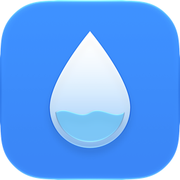

한모금 · One Sip
문의
버그 제보나 궁금한 점은 ekalsdl0225@gmail.com로 보내 주세요. 기기 모델과 iOS · watchOS 버전을 함께 적어 주시면 빠르게 확인할 수 있습니다.
자주 묻는 질문
마신 양이 실제와 다른 것 같아요.
처음에는 평균적인 한 모금 크기로 계산합니다. 메뉴 › 한 모금 보정에서 용량이 적힌 병을 한 번 비우며 모금을 세면 내 한 모금이 정해지고, 지난 기록까지 함께 고쳐집니다.
Apple Watch에 앱이 보이지 않아요.
iPhone의 Watch 앱 › 일반 › 앱 자동 설치를 켜거나, Watch 앱 아래쪽 '사용 가능한 앱'에서 한모금을 설치해 주세요.
건강 앱에 기록되지 않아요.
건강 앱 › 공유 › 앱 및 서비스 › 한모금에서 '수분' 쓰기를 허용해 주세요.
기록을 지우고 싶어요.
메뉴 › 오늘 기록 또는 추세 › 날짜별 기록에서 밀어서 지우거나, 맨 아래 '이 날 삭제'를 누르세요.
Contact
For bug reports or questions, email ekalsdl0225@gmail.com. Including your device model and iOS · watchOS version helps a lot.
FAQ
The amount doesn’t look right.
One Sip starts with an average sip size. In Menu › Calibrate Sip, count your sips once while finishing a bottle with its volume printed on it. Your sip size is set, and past records are corrected too.
One Sip doesn’t appear on my Apple Watch.
On iPhone, open the Watch app › General and turn on Automatic App Install, or install One Sip from Available Apps at the bottom of the Watch app.
Water isn’t saved to Health.
In Health › Sharing › Apps and Services › One Sip, allow writing Water.
How do I delete records?
In Menu › Today’s Log or Trends › Daily Logs, swipe to delete, or tap Delete This Day at the bottom.
お問い合わせ
不具合の報告やご質問は ekalsdl0225@gmail.com までお送りください。デバイスの機種とiOS・watchOSのバージョンを添えていただくと助かります。
よくある質問
飲んだ量が実際と違う気がします。
最初は平均的なひと口の量で計算します。メニュー › ひと口の補正 で、容量が書かれたボトルを1本飲み切りながら口数を数えると、あなたのひと口が決まり、これまでの記録もまとめて修正されます。
Apple Watchにアプリが表示されません。
iPhoneのWatch App › 一般 で「Appを自動インストール」をオンにするか、Watch Appの下の「利用可能なApp」からひと口をインストールしてください。
ヘルスケアに記録されません。
ヘルスケア › 共有 › Appとサービス › ひと口 で「水分」の書き込みを許可してください。
联系我们
如需报告问题或咨询,请发送邮件至 ekalsdl0225@gmail.com。附上设备型号和 iOS · watchOS 版本有助于我们更快处理。
常见问题
记录的饮水量好像不准确。
一开始会按平均的一口大小计算。在 菜单 › 校准一口 中,喝完一瓶标有容量的水时数一下口数,就能确定你的一口大小,之前的记录也会一起修正。
Apple Watch 上看不到 App。
在 iPhone 的 Watch App › 通用 中打开“自动安装 App”,或在 Watch App 底部的“可用 App”中安装一口。
没有写入“健康”。
请在“健康” › 共享 › App 和服务 › 一口中允许写入饮水数据。
聯絡我們
如需回報問題或詢問,請寄信至 ekalsdl0225@gmail.com。附上裝置型號和 iOS · watchOS 版本有助於我們更快處理。
常見問題
記錄的飲水量好像不準確。
一開始會按平均的一口大小計算。在 選單 › 校準一口 中,喝完一瓶標有容量的水時數一下口數,就能確定你的一口大小,之前的記錄也會一起修正。
Apple Watch 上看不到 App。
在 iPhone 的 Watch App › 一般 中開啟「自動安裝 App」,或在 Watch App 底部的「可用的 App」中安裝一口。
沒有寫入「健康」。
請在「健康」› 分享 › App 與服務 › 一口中允許寫入飲水資料。